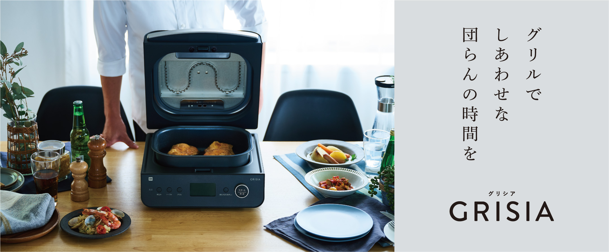

厨房智能硬件 · 厨房品类创新
虎牌 GRISIA 计划11月21日上市：双面加热扩展自动烹饪锅
Tiger Corporation 预告的 GRISIA CLX-A400 计划于 11 月 21 日上市。官方称其将顶部碳加热器与底部 IH 组合，提供 16 种用途和约 10,000 组温控模式；这些参数来自厂商资料，且本期未独立核实日本渠道的实际库存。

Tiger Corporation 预告这款自动烹饪锅将于11月21日上市。它把自动锅擅长的炖煮、翻炒，与过去更难自动化的煎烤合在一台设备里。双面加热设计的重点，是减少翻面、看火等步骤；官方也把“取消灶台”作为一种新烹饪方式来介绍。
它还触及厨房空间设计：设备可以移至餐桌旁，让烹饪和用餐发生在同一空间。是否真能替代灶具，仍要看长期烹饪表现、清洁负担和家庭实际使用频次。
Tiger Corporation 官方产品公告 · 公告 2026-10-15；产品计划上市 2026-11-21上市节点：官方计划 11月21日；品牌公告发布于10月15日。本期未独立核实渠道库存。